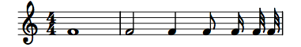
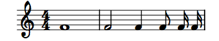
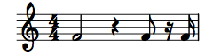
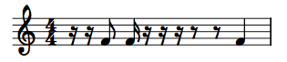
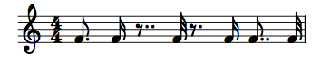
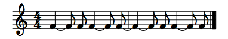
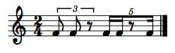
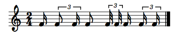
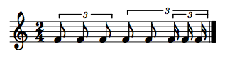
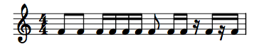

Rhythms
+ Associated example files
This page addresses the fundamentals of rhythms in slippery chicken, such as naming conventions and how various rhythm modifiers are represented. This manual, including the tutorials and other pages, will use the American terms for rhythms. Details on the differences between British and American note value terminology can be found at http://en.wikipedia.org/wiki/Note_value.
Documentation on rthm-seq-palettes
and rthm-seq-maps can be found on
a separate page.
+ Durations
Numeric representation
Rhythmic durations in slippery chicken can be represented
either numerically or through the use of alphabetic rhythm-naming
conventions similar to those of Common Music and Common Music
Notation. The numeric representations for rhythmic durations are
determined by their relationship to a whole note, which is defined to
be 1. Correspondingly, a half note is
2 (two divisions of a whole), a quarter note
is 4 (four divisions of a whole), an eighth note
is 8, a sixteenth note is 16, a
thirty-second note is 32, and so forth.
:rthm-seq-palette '((1 ((((4 4) 1)
(2 4 8 16 32 32)))))
|  |
Alphabetic representation
Alphabetic representations exist
for the most frequently used rhythmic durations. These are
w = whole, h = half, q =
quarter, e = eighth, and s = sixteenth. Grace
notes are indicated by g. Further long durations are also
available: b = breve (double whole),
l = longa (4x whole), m = maxima (8x whole).
:rthm-seq-palette '((1 ((((4 4) w)
(h q e s s)))))
|  |
+ Rests
Rhythmic values in parentheses represent rests of the given duration. As with all note durations, these can be represented as numbers or letters.
:rthm-seq-palette '((1 ((((4 4) h (q) e (16) 16)))))
|  |
slippery chicken does not automatically consolidate rests. Thus, two or more consecutive rests in the code will appear as the same number and type of consecutive rests in the printable output.
:rthm-seq-palette '((1 ((((4 4) (s) (s) e s (s) (s) (s) (e) (e) q)))))
|  |
+ Dots
Dotted values are indicated by placing a period after the rhythmic
value. When using the alphabetic rhythm representations, the period
can be placed immediately after the letter. Thus, a dotted eighth is
indicated as e., a dotted quarter as q.
etc. When using numbers to represent rhythmic durations, the period
must be preceded by a backslash to prevent Lisp from reading the dot
as a decimal point. Thus, a dotted eighth is indicated as
8\., a dotted quarter as 4\. etc. Any
number of successive dots can be added simultaneously
(e.g. e.. for a double-dotted eighth). Alternatively
such rhythms may be entered as strings, e.g. "8."
Dots function the same way for rests as for notes.
:rthm-seq-palette '((1 ((((4 4) e. s (e..) 32 (8\.) 16 8\.. 32)))))
|  |
+ Ties
Ties from one rhythm to the next rhythm are indicated by
placing a plus sign immediately between two rhythmic values with no
space between them, such as q+e or
4+8. Ties from one rhythm to the previous
rhythm are indicated by placing a plus sign immediately before a
free-standing rhythmic value, e.g., for placing ties over bar lines.
When using the alphabetic representations, the plus sign for a tie to
a previous rhythm can be placed immediately before the letter, such
as +e or +q etc. When using numbers to
represent rhythmic durations, the plus sign for a tie to a previous
rhythm must be preceded by a backslash to prevent Lisp from reading
it as a "positive" sign. Thus, a free-standing eighth tied to the
previous rhythm is indicated as \+8, a free-standing
quarter tied to the previous rhythm as \+4 etc.
:rthm-seq-palette '((1 ((((4 4) q+e e 4+8 8) ; ties from rhythm to the next
(+q +e e 4 \+8 8))))) ; ties to the previous
|  |
+ Tuplets
Tuplet rhythms can also be represented either numerically or using
the alphabetic naming conventions. As with straight rhythms, numeric
indications for tuplet durations are determined by their relationship
to a whole note (1). Thus, since there are 12 triplet
eighths in a whole note, a triplet eighth can be indicated
by 12. A septuplet sixteenth is 1/28th of a whole note,
and can therefore be indicated as 28; a septuplet eighth
as 14, etc.
The alphabetic nomenclature for triplets and quintuplets consists of
adding a t (for triplet) or an f (for
quintuplet, or "five"-tuplet) to the rhythm name. Thus, a triplet
eighth can be notated te or t8, a
quintuplet sixteenth as fs or f16, a
quintuplet eighth as f8, etc.
Tuplets must be entered as actual durations
As opposed to some other text-based notation systems, such as
LilyPond, where the tuplet rhythms are entered as their note-type in
the score (straight eighth, sixteenth etc.) and then automatically
scaled to their tuplet durations when tuplet indicators such as
brackets are added, tuplet durations in slippery chicken
must be entered as their actual durations. Thus, a triplet
eighth must always be notated as 12
or t8/te rather than just 8
or e inside of tuplet brackets (brackets are explained
below). This is because slippery chicken processes
tuplet durations separately from tuplet brackets and
numbers, rather than using brackets as a flag to scale their
enclosed durations. This is particularly important when creating
nested tuplets (as described below.)
Tuplet brackets and numbers
Since slippery chicken version 1.0.6, tuplets must be
accompanied by brackets and tuplet numbers. These will then appear in
the printed score, e.g. as a "3" in a bracket above a triplet figure.
Curly brackets {} indicate the scope of a tuplet. The
first number after the opening curly bracket is the number of the
tuplet; 3 indicates a triplet, 5 a
quintuplet, 7 a septuplet etc. Explicit ratios such as 7/6
may also be used; in this case 7:6 will appear in the bracket as
opposed to merely 7. There must be white space before and after each
curly bracket of a tuplet, otherwise slippery chicken will
exit with an error message.
:rthm-seq-palette '((1 ((((2 4) { 3 te te (te) }
{ 5 - fs fs (f8) f16 - } )))))
|  |
Tuplet brackets can also be placed on partial-beat tuplets, so long as the sum of all durations in that measure produces a complete measure. However, all tuplet brackets must span at least two events (notes/rests); tuplet brackets cannot be placed over just one rhythm.
:rthm-seq-palette '((1 ((((2 4) s { 3 te ts } e { 3 t32 t32 } s
{ 3 ts ts })))))
|  |
Dots, ties, and rests are indicated the same way for tuplets as for straight rhythmic values, for both alphabetic and numeric forms.
Nested tuplets
Nested tuplets can also be created using slippery chicken. As mentioned above, it is particularly important to remember that the actual durations of the rhythms must be entered, and that straight rhythms are not automatically scaled by enclosing them in tuplet brackets.
For example, to create triplet sixteenths within a triplet eighth,
one can start by calculating the duration of the triplet eighth,
which is 12 (1/12 of a whole note). When one triplet
eighth is divided into three equal parts, i.e., a triplet within a
triplet, each of the resulting triplet sixteenths have a duration of
1/3 of 1/12, or 1/36, and are thus indicated by 36:
:rthm-seq-palette '((1 ((((2 4) { 3 12 12 12 }
{ 3 12 12 { 3 36 36 36 } } )))))
|  |
Alternative Tuplet Notation: RQQ
The RQQ (Rational Aliquot Quarter?) approach will probably be familiar to composers who have worked with IRCAM's Patchwork/OpenMusic, especially those with a New Complexity leaning. I first came across it in Patchwork in 1995, when I noticed that this piece of IRCAM software used Bill Schottstaedt's CMN (also a core part of slippery chicken) for the definition of rhythms and their rendering into notation. RQQ was Bill's invention, in response to a request from (if Bill's memory serves him correctly) Walter Hewlett (son of Bill, of Hewlett-Packard fame). IRCAM, specifically Gerard Assayag, then made some improvements and incorporated it into their own software.
With RQQ notation, any arbitrarily nested rhythmic structure can be
expressed in simple proportions. In slippery chicken this kind
of notation can be used in the definition of rthm-seqs and
freely mixed with the kind of notation we've been discussing thus
far:
:rthm-seq-palette '((1 ((((4 4) (4 (1 1 1 1))))))
(2 ((((4 4) (4 (1 1 1 (1 (1 1))))))))
(3 ((((4 4) (4 (1 1 (2 (1 1 1))))))))
(4 ((((4 4) { 3 (te) { 3 (18) 36 } { 3 - 36 36 36 - } }
(1 ((4 (1 (1) 1 1 1)) (5 (1 1 1 1))))
(1 (1 (3 (1 1 1 1))))
{ 5 fs x 5 })))))
 |
Here the definition of rhythms is made via integer divisions of a
given number of quarter notes. The first example is the simplest. This
is a 4/4 bar of four quarter notes, but instead of q q q q
we write (4 (1 1 1 1)). The first 4 in this list indicates
that we're going to divide up 4 quarter notes. The following list of
ones indicates that the four quarter note duration will be divided into
four equal rhythms (i.e. totalling a whole note). So as bar 1 of the
notation shows, we simply get four quarter notes.
The second example/bar (4 (1 1 1 (1 (1 1)))) proceeds
similarly but this is where the nesting comes in: the last quarter note
is subdivided into two equal parts (i.e. eighth notes), as indicated by
the extra level of nesting here: the list (1 (1 1)).
The third example (4 (1 1 (2 (1 1 1)))))))) shows how
this type of rhythmic notation can quickly and easily lead to tuplets
and much more complex rhythmic structures (so-called irrational
rhythms): Here the 4/4 bar is divided into three parts in the
proportions 1:1:2. The final 2 (or half note) is itself subdivided into
three equal parts, hence the triplet quarter notes in the generated
notation.
The fourth example takes quite a leap. It shows first of all how
standard slippery chicken rhythm notation can be mixed with
RQQ notation: The first and last beats of normal notation frame two
separate beats of RQQ notation. Each of these occupies a quarter note
(hence the 1 at the start of both lists) but their subdivisions are
quite different. ((4 (1 (1) 1 1 1)) (5 (1 1 1 1)))) is
interesting first of all as it shows that rests can be indicated in RQQ
notation just as in normal slippery chicken notation, i.e. by
placing the rhythmic value in a single element list, here
(1). The first RQQ quarter note then is divided into nine
equal parts (as indicated by the 4 and then the 5 at the start of the
two sublists and the rendering of this beat as an overall 9:8
tuplet). The four is further subdivided into five equal parts, hence
the 5:4 quintuplet bracket in the notation. The five is conversely
divided into four equal parts, hence the 4:5 tuplet. The second RQQ
quarter (third beat) division ((1 (1 (3 (1 1 1 1)))))
necessitates no tuplets as the 1 and 3 indicate that the beat will be
divided into durations of a sixteenth and a dotted eighth
respectively. Note that the 1 here has no further subdivisions, hence
it is rendered in notation as a simple sixteenth, whereas the 3 is
further subdivided into four equal parts ((1 1 1 1)). The
slippery chicken software recognises that this can be rendered
as four dotted 32nds, as opposed to a 4:3 tuplet bracket (also
acceptable but unnecessary).
slippery chicken's RQQ processing does its best to
work out if some rhythms are better expressed with dots rather than
tuplets; it also tries hard to get beaming correct. Anyone with experience
of nested tuplets knows that it's not always obvious how to do these
things, so sometimes the procedure exits with an error
(usually it comes from get-tuplet-ratio). Some time in the
glorious future we'll have code that works in every case even if it can't
decide the best number of dots and beams, but for now, I apologise if your
particular RQQ case leaves you stranded.
+ Beams
By default, slippery chicken produces scores with no
beams. However, the user can specify where beams are to be placed in
the typeset output by inserting - (hyphen/minus) signs
among the rhythm items of the given rthm-seq. Beams are
specified by placing a hyphen before the first rhythm of the group of
rhythms that are to be beamed together, thus beginning the beam, and
a second hyphen after the last rhythm of the group, thereby ending
the beam.
Beams can be placed to span over rests that occur between two notes in the same beat, but cannot be made to extend over rests that begin or end a beat in CMN--in Lilypond this is possible, as are "Stemlets" over rests.
:rthm-seq-palette '((1 ((((4 4) - e e - - s s s s - e - s s -
(s) - s (s) s -)))))
|  |
+ Repeat rhythms shorthand
The sequential repetition of a given rhythm can be notated using
the repeater shorthand with the multiplication symbol
x. The following example produces a bar with 16
consecutive sixteenth-notes:
(make-rthm-seq-bar '((4 4) s x 16))